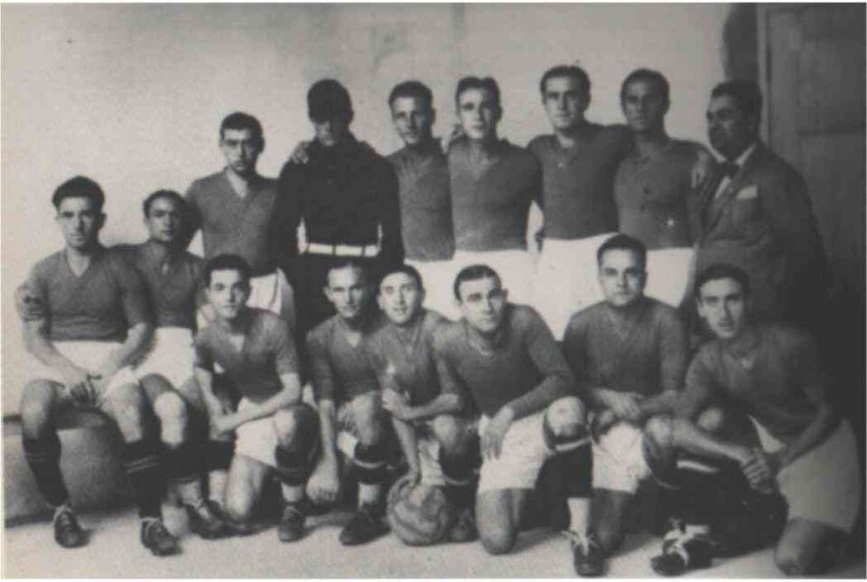

⚜ 1926La nascita della Fiorentina
Negli anni Venti Firenze, culla del Rinascimento, non aveva ancora una grande squadra di calcio all'altezza del suo nome. A colmare quel vuoto fu il Marchese Luigi Ridolfi Vay da Verrazzano, sportivo e mecenate, che sognò un club capace di unire la città sotto un'unica bandiera.
Dopo un'assemblea preparatoria il 26 agosto 1926 in uno studio notarile, la nuova società nacque ufficialmente il 29 agosto 1926 dalla fusione di due realtà cittadine: il Club Sportivo Firenze e la Palestra Ginnastica Fiorentina Libertas. All'inizio fu iscritta come Associazione Calcio Firenze, ma già dal 1927 prese il nome destinato a diventare leggenda: Fiorentina.
Le prime partite si giocarono al campo di Via Bellini. E Ridolfi non si fermò: per la sua squadra volle anche uno stadio moderno, che pochi anni dopo avrebbe affidato al genio di Pier Luigi Nervi. Era l'inizio di cento anni di storia.
«Dare a Firenze una squadra all'altezza della sua arte e della sua storia.»